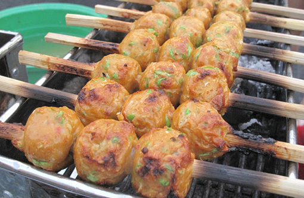
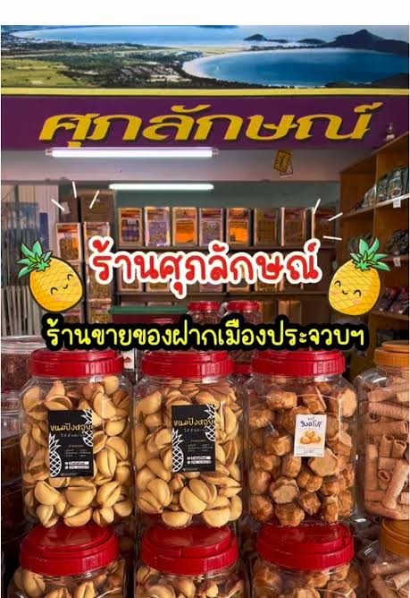

อาหารและของฝาก
อาหารพื้นถื่น

จับไม้ หรือจับหลัก สามารถเลือกซื้อได้ตามทั่วไปตามตลาดเป็นของกินที่หากินง่ายมาก
ของฝากจากชุมชน

สับปะรดกวน ของฝากเมืองประจวบ เลือกซื้อได้ที่ร้านของฝากศุภลักษณ์ในอำเภอเมืองประจวบ
เที่ยวบ้านเรา

จับไม้ หรือจับหลัก สามารถเลือกซื้อได้ตามทั่วไปตามตลาดเป็นของกินที่หากินง่ายมาก

สับปะรดกวน ของฝากเมืองประจวบ เลือกซื้อได้ที่ร้านของฝากศุภลักษณ์ในอำเภอเมืองประจวบ